美食享宴
北部美食
中部美食
心得
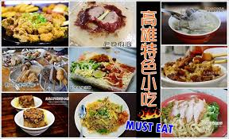
高雄必吃27項美食
來高雄一定會想到各式各樣的傳統小吃，但你一定不知道當地人在吃什麼吧！
挑選出來高雄旅遊必吃的27項在地小吃分享給大家，
你準備好吃遍高雄了嗎?
美食清單：
1. 北港三代蔡家筒仔米糕
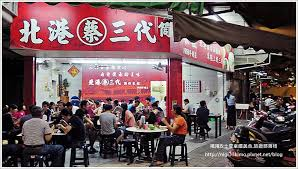
2. 丹丹漢堡(必吃漢堡+麵線羹的完美絕配)
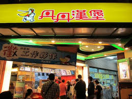
3. 美紅豆漿(在地人激推眷村早點)必點：酸菜蛋餅(辣／不辣)
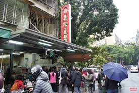
4. 樺達奶茶(濃厚茶香+現煮珍珠)
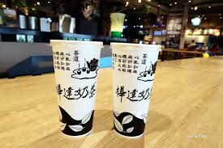
5. 雙妃奶茶(加珍珠免費)
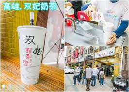
6. 婆婆綜合茶.必喝飲品: 綜合茶(金桔檸檬梅子茶+冬瓜茶+彈珠汽水)
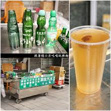
7. 阿Q凍圓
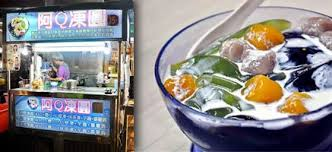
8. 老二腿庫飯(深夜限定美食)
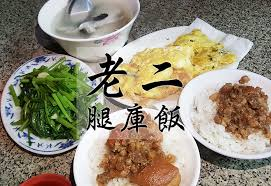
9. 阿霞燒肉飯 必吃:古早味烤肉飯
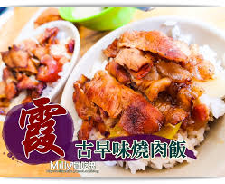
10.正牌白糖粿 必吃原因:南部人的特有點心，外酥內軟
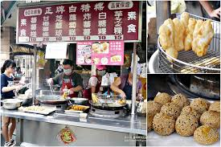
11. 虱目魚專賣店
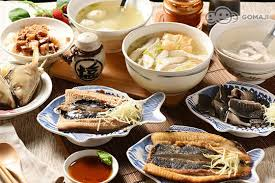
12. 鳳山體育館蔥肉餅 必吃原因:南部才有的蔥肉餅-路邊攤排隊美食
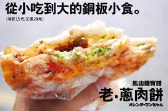
13. 香園牛肉麵(眷村風味-在地人口碑)
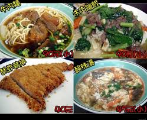
14. 博義師燒肉飯
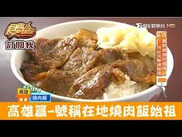
15. 斗六冰城
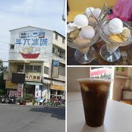
16. 老江紅茶 必點招牌：高牧鮮奶紅茶+蛋肉吐司
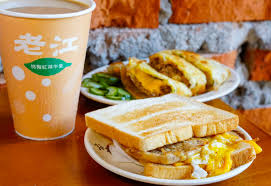
17. 老牌周燒肉飯 必吃：燒肉飯配上碗味噌湯（在地人排隊美食-現烤古早味）
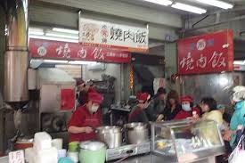
18. 阿萬意麵
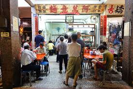
19. 鴨肉珍（老字號帶皮鴨肉飯）
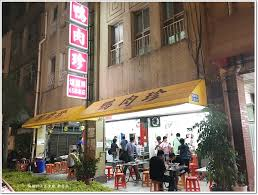
20. 郭家肉粽（滿滿花生粉＋古早味醬油膏）
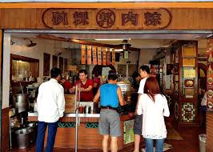
21. 廖家黑輪 必吃：三民市場網路推薦美食（現烤手工黑輪）
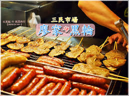
22. 老周冷熱飲 必點：八寶冰、花生湯、米糕粥、燒麻糬
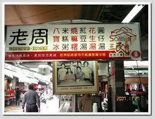
23. 鄧家粉圓冰（粉圓冰一碗10元）
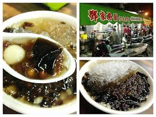
24. 仁武烤鴨（一鴨兩吃、每天排隊領號碼牌）
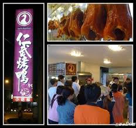
25. 品元糖口（平價好吃雪花冰、排隊美食）
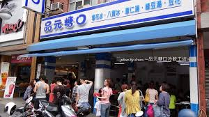
26. 柏弘肉燥（肉燥飯必吃＋魚過魚湯）
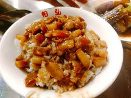
27. 上海生煎湯包（生煎包＋油豆腐細粉湯）
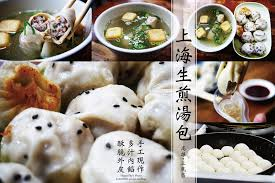